COMMERCIAL VIDEO / FEATURED九霄仙府 · 广告素材 01
01 / VISUAL STORYTELLING✦
VISUAL STORYTELLING / AI CONTENT / CREATIVE DIRECTION
让想象，
发生在每一帧。
秦永昌·影像创意·AI CONTENT CREATOR·VISUAL STORYTELLING

02
SELECTED WORK / 2026
游戏商业化广告
以高密度的视听表达捕获注意力，用结果反推创意迭代。
FEATURED CASE / 01
《九霄仙府》
参与游戏商业化广告的完整生产：创意策划、脚本拆解、分镜设计、AI 视觉生成与后期包装。围绕不同卖点持续测试、快速迭代。
- 我的职责
- 创意 / 分镜 / AI 视觉 / 剪辑包装
- 项目成果
- 持续输出商业化广告素材，形成完整视频制作 Workflow。
MORE PERFORMANCE CREATIVE
不同卖点 · 同一目标
AI RESTYLE PROCESS
从原始素材，到新的视觉语言。
AI
RESTYLE→
RESTYLE→
AI
RESTYLE→
RESTYLE→
03
AI NARRATIVE
AI 影视短剧
用镜头调度、角色统一与情绪节奏，完成从文本到视听叙事的转化。
04
GAME PROTOTYPES
AI辅助游戏开发demo
借助 AI 工具制作的两款游戏原型，展示实际操作与玩法流程。
俯视角动作原型
在庭院场景中演示角色移动、战斗和技能特效。
场景探索与机关解谜
通过场景探索、线索阅读和机关交互推进解谜。
05
EXPERIMENTAL MOTION
AIGC 制作
对画面、动作、转场与风格化表达的持续实验。
不是让 AI 替代创作，
而是让它成为更快抵达想象力的路径。
06
BRAND FILM
品牌宣传片
将产品能力转译为可感知、可记忆的影像体验。
CASE STUDY / 05
泡漫 AI
平台宣传片
参与品牌宣传片创意策划、科技感视觉概念与镜头设计；使用 AI 工具完成画面制作与后期包装，并参与模型效果测试与优化建议输出。
07
FROM SCRIPT TO SCREEN
分镜头设计
从文字、策划到故事板，让团队在制作开始前看见完整的叙事节奏。
01 / PRE-PRODUCTION
文字分镜头剧本
用文字确定冲突、节奏与每一镜的叙事功能。
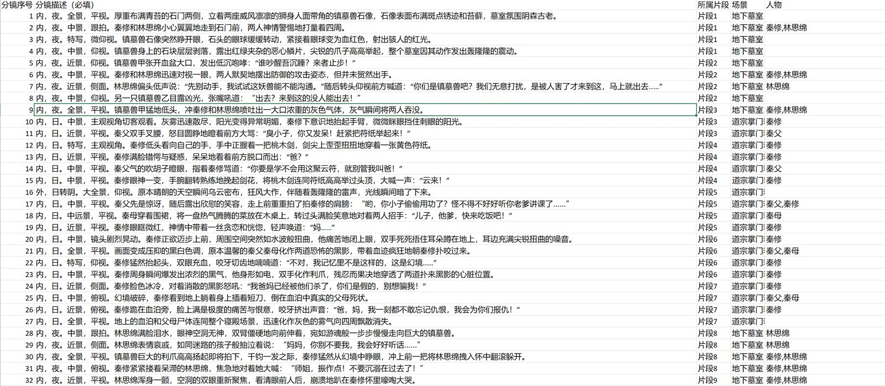
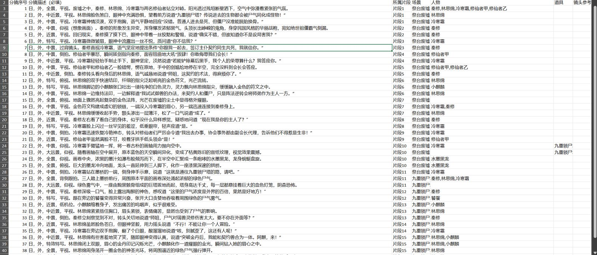
02 / CREATIVE PLANNING
买量游戏策划表
先拆解卖点，再把创意转化为可执行的素材方案。
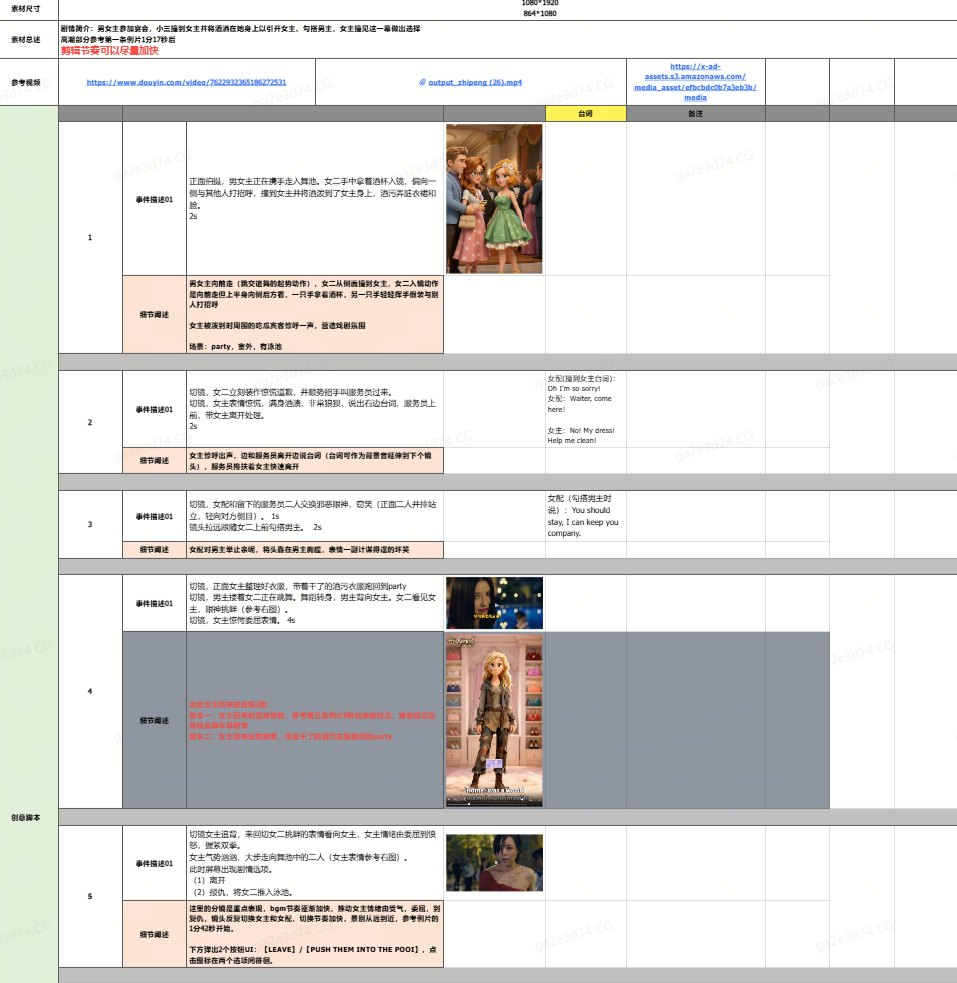
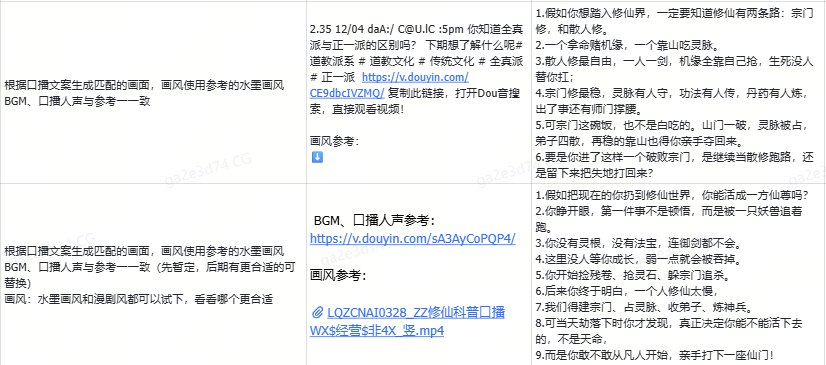
03 / VISUAL BOARD
故事板
以画面、构图和镜头关系预演最终的视觉节奏。
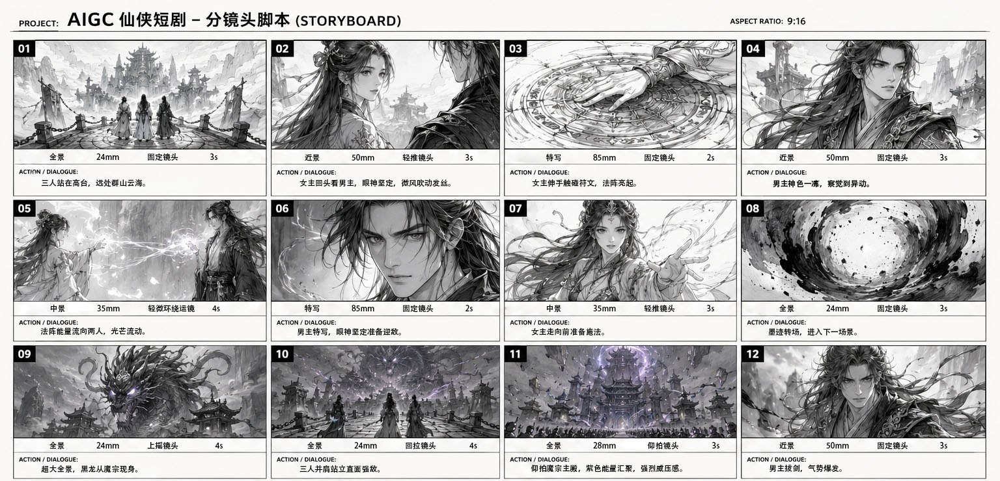
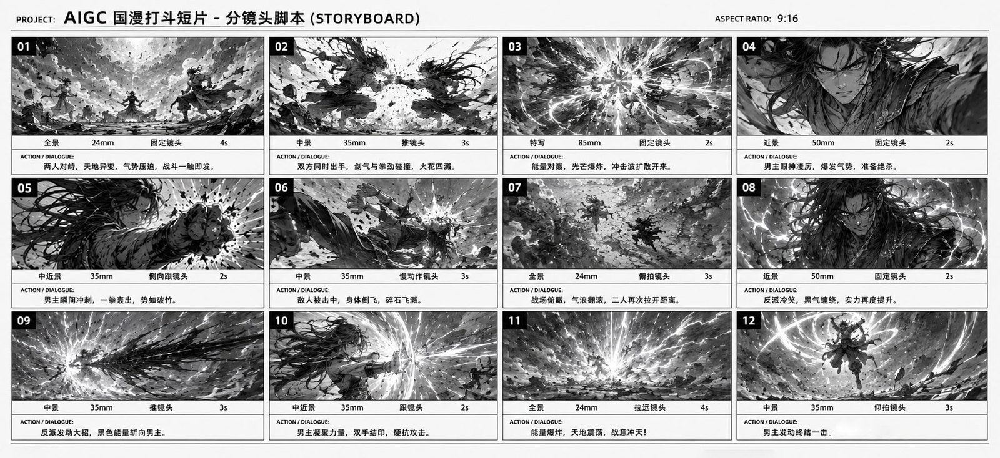
08
VISUAL DEVELOPMENT
视觉设定
人物、场景与道具共同构成一个可被镜头相信的世界。
01
人物设计
CHARACTER DESIGN
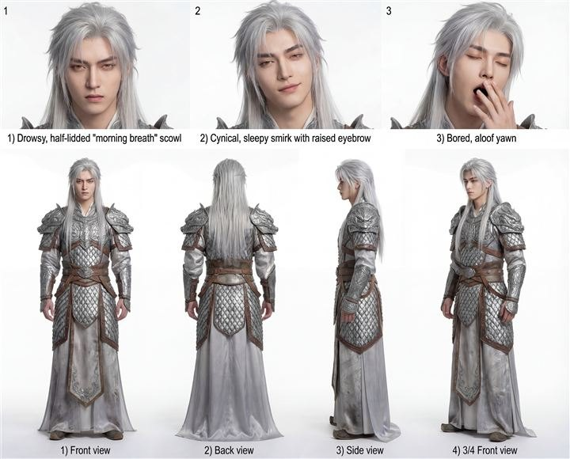
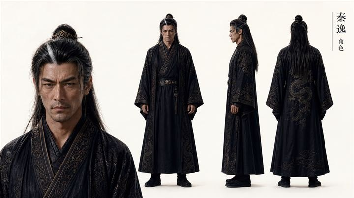
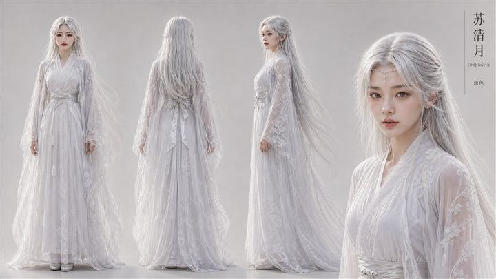
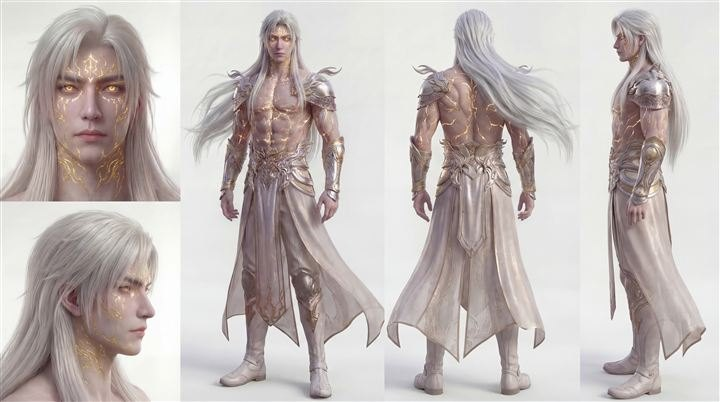
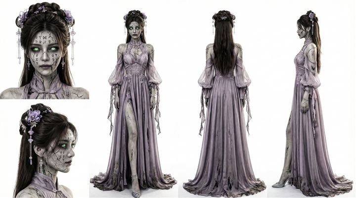
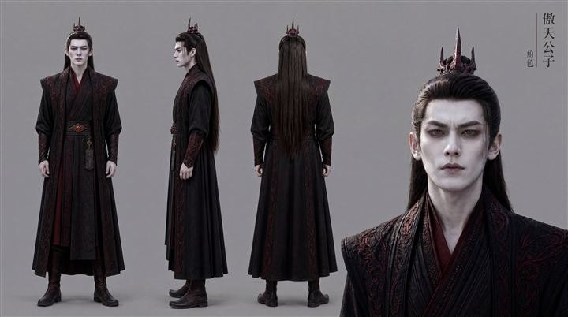
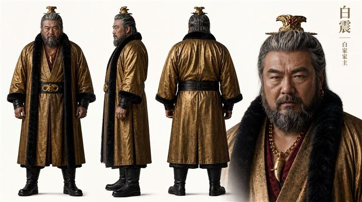
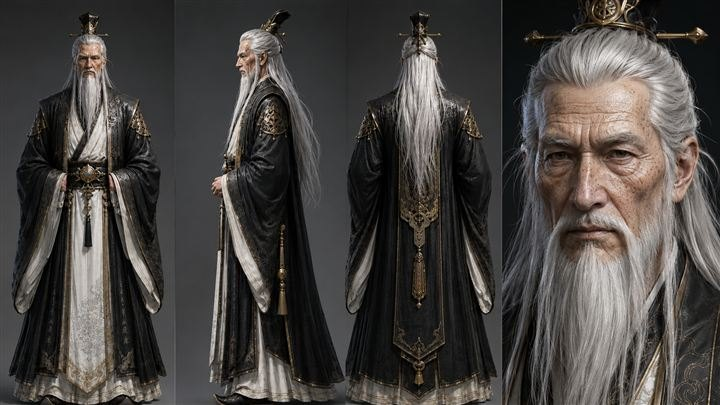
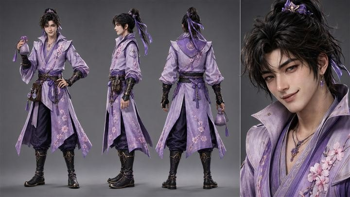
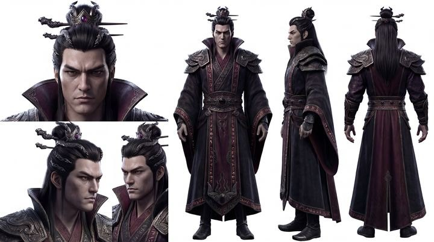
02
场景设计
ENVIRONMENT DESIGN
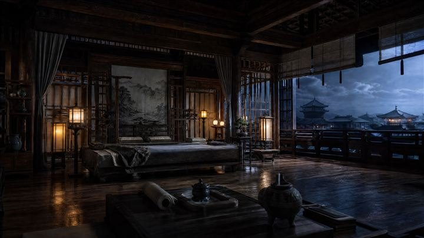
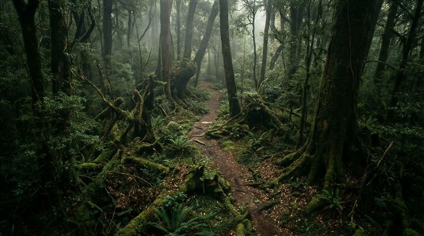
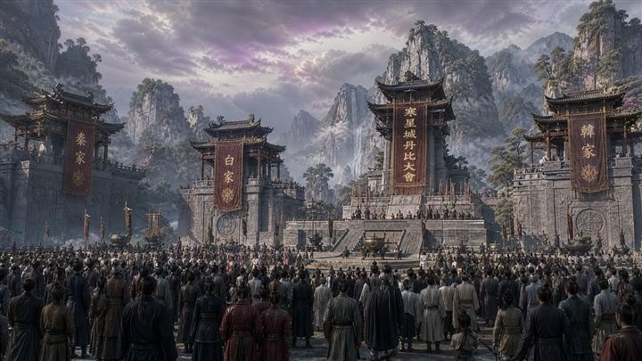
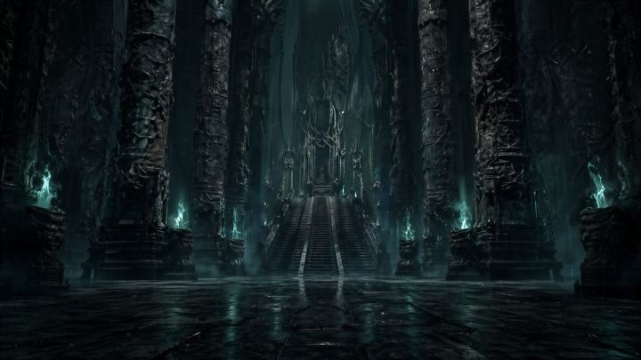
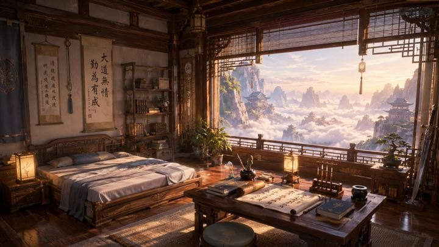
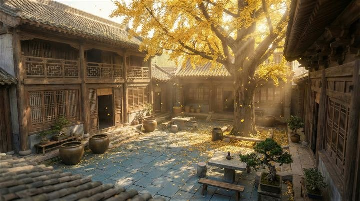
03
道具设计
PROP DESIGN
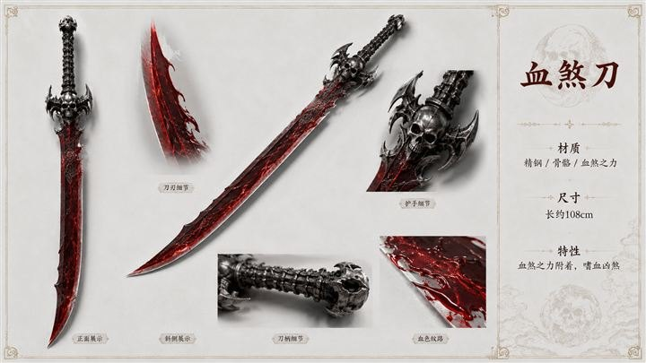
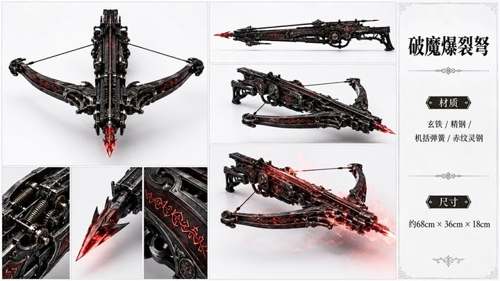
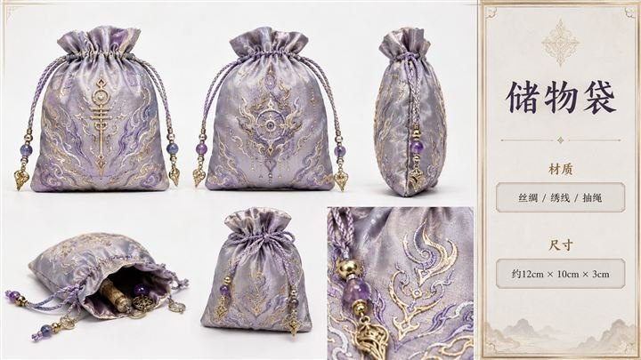
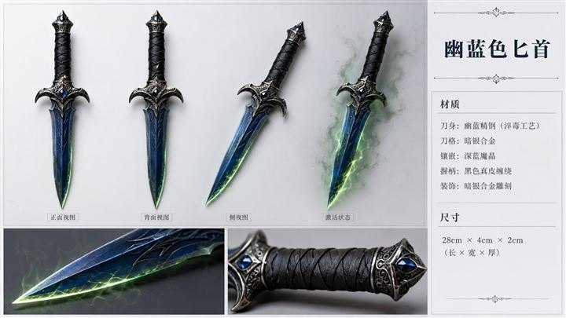
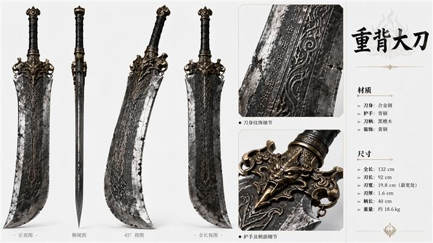
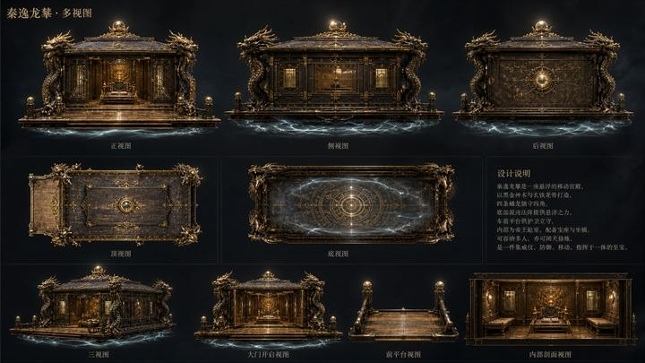
08 / CONTACT
AVAILABLE FOR NEW PROJECTS联系我
期待与有想象力的团队一起，
把下一个好故事变成影像。